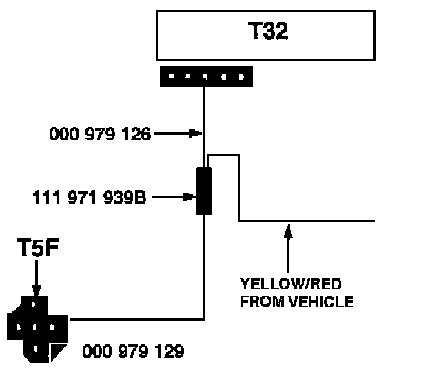

Sunroof - Inoperative Using Convenience Close Feature
Group: 60Number: 97-02
Date: Sept. 7, 1997
Subject:
Sunroof Will Not Close Using Convenience Close Feature
Model(s):
Golf, GTI, Jetta w/Power 1993 --> 1997 VIN _VM070779
Windows and Sunroof
Condition
Power sunroof inoperative using convenience close feature (key in door to close windows and sunroof).
Convenience close feature operation
Up to VIN 3VWTD81HTVM070779:
^ Power windows close, then after 5 seconds, power sunroof closes.
From VIN 3VWTD81HTVM070780:
^ Power windows and power sunroof close simultaneously.
Service
Modify power sunroof wiring on vehicles produced up to VIN 3VWTD81HWM070779 as follows:
Items required for modification
^ VAS 1978 Kit
^ Wire/Connector - 000 979 126 (from kit)
^ Wire/Connector - 000 979 129 (from kit)
^ Splice - 111 971 939B (from kit)
Procedure
- Obtain radio code.
- Remove ground (GND) cable from battery.
- Locate T5/5f (5 pin connector) behind left A-pillar kick panel.
- Remove (Black/Green) wire from connector T5/5f (male terminal side), isolate and carefully tape back to harness.
- Remove black 5 pin connector which snaps into multi-pin connector T32 (round multi-pin connector which goes through left A-Pillar).
- Remove wire terminal (pin 3) from connector.
- Remove terminal end from wire, and splice together with wire 000 979 126 using butt splice 111 971 939B.
- Insert (female) terminal of wire 000 979 126 into (pin location 3) of black 5 pin connector.

- Crimp wire 000 979 129 into other end of butt splice 111 971 939B.
- Insert (male) terminal of wire 000 979 129 into open connector location of black 5 pin connector T5/5f behind left A-pillar kick panel.
- Reinstall connectors, and kick plate.
- Reconnect battery (GND).
- Recode Radio.
When procedure applies to vehicles within The New Vehicle Limited Warranty and adheres to Warranty Policy guidelines, use the following:
Part Identifier: 6000
Labor Operation: 6000711 80 TU